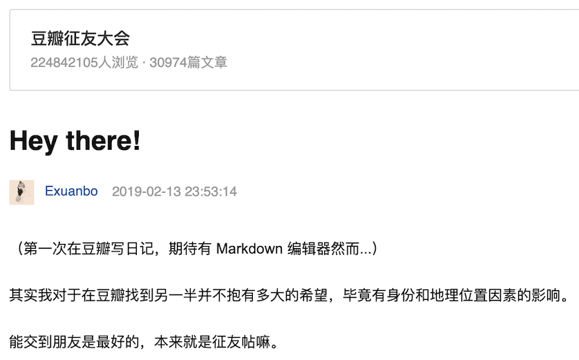
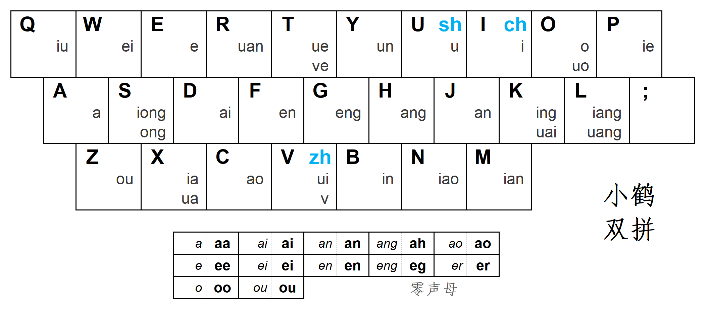
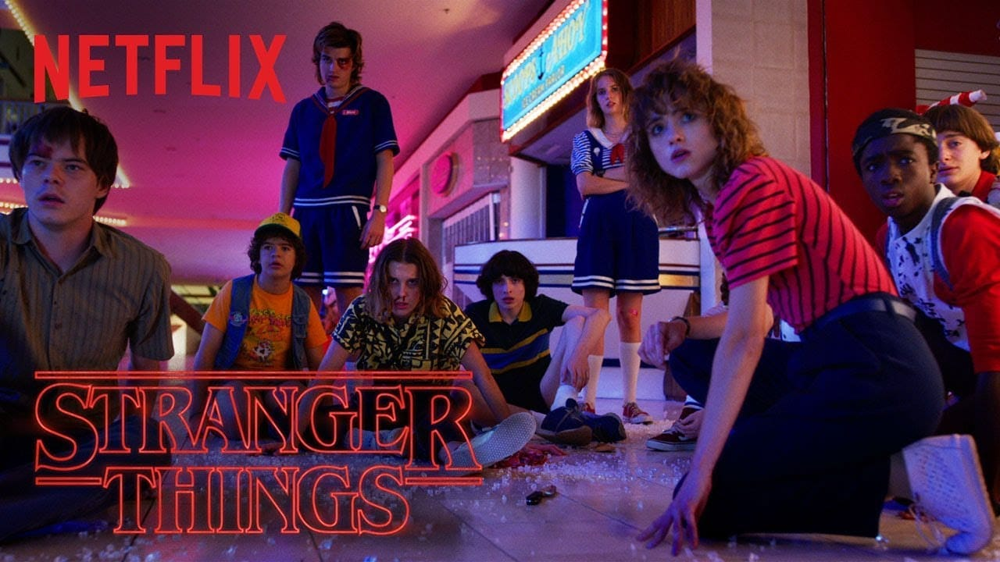
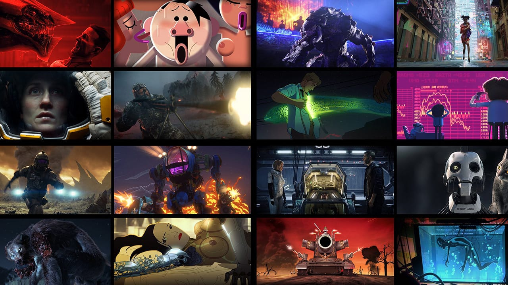
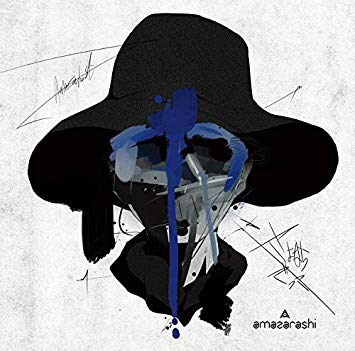
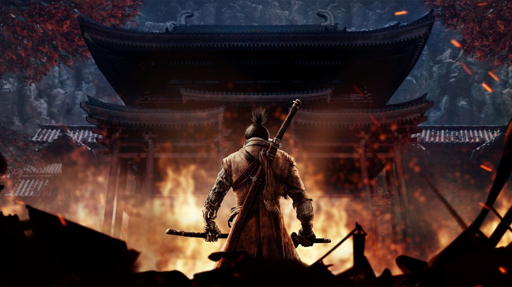

Ramblings
人会想尽一切办法（哪怕是荒谬的办法）避免直面自己的灵魂。
和去年的此时相比我最大的变化是学会了「自我接纳」，包括“好”的方面也包括“坏”的方面，对 自己「真诚」。但人际交往时我对 他人 仍然很难放下戒备，总是一直戴着“面具”，不敢把内心最深处表现出来，即使是像现在这样在把文字打在屏幕上，甚至是和对自己知根知底的朋友交流时我的内心仍有顾虑，害怕被 judge。原因很简单，我过于在意他人对自己的评价
情人节时我在 #豆瓣征友大会 主题下写了这样一篇：
放了一张照骗然后简单介绍了自己的爱好和三观，第二天收到十几个赞和评论，其中有两个女孩主动豆油了我，但聊过几句就没有了互动，我平时也不是那种会主动找朋友闲聊的人，无论是线上还是线下，所以这就变成了一个非常尴尬的情况，说起来甚至有点可笑。过了段时间我把日记设置成了仅自己可见。八月在博客上写了这篇 《关于死亡、生活和爱情》 。我一直在思考，自己到底应该用怎样的方式认识新朋友并与他们深度交流而不是停留在表面的寒暄，对我来说这是发展为爱情的前提，然而显然机会少之又少。
无主题的日常对话是我最不擅长的事之一，因为我的经历和物质生活是穷乏的，比如最平常的关于“吃”的话题我总是无法积极回应，因为我从来没有对这件事感兴趣过，只要健康就能接受（当然和朋友出去时往往需要妥协），“好吃”只是附加项，所以对话往往以双方的沉默结束。
六月在豆瓣上回答了 《Exuanbo 的普鲁斯特问卷》 ，明年的相同时间我打算再回答一次，看看有什么变化。比如这个问题 Where would you most like to live? ，之前我的回答是“去过足够多的地方之后才能决定。目前是德国”，现在改成了“日本”。可能和玩《只狼》有关，我发现自己还是更喜欢汉字文化圈的国家。
香港发生的事情和国内的种种反应让我一度陷入政治性抑郁，“未来还会好吗？”。九月和里瓣网友 tenny 成功会师并参加了活动，之后我试着逐渐减少新闻摄入，拾起 Switch 重返海拉鲁，心理状态这才逐渐好转。
这段时间读了不少 王垦的博文，说他是个程序员好像有点贬低的意思，“一个浪漫主义的正直学者”我觉得更适合来描述王垠。他的很多言论充满争议，但从某种意义上给了我一些方向和坚持理想主义的勇气，我想成为像他那样的人。
为什么全世界口碑服务都很好的迪士尼到了中国内地就这么让人讨厌呢？
因为中國人從心底不相信童話，從心底希望別人帶她看一個「真實的世界」。by 李如一
想做独立游戏，想去优秀的游戏工作室，想给和我一样爱幻想的人们带去快乐与感动。
Jesse Chan 在 《重组 2010s》 中用 10 段回忆、10 个故事，重新勾勒他的 2010 年代的轮廓。从 12 岁到 22 岁，从初中到高中再到大学，「我」应该如何记录这“大幅”成长的十年？
想这个问题的时候，正好听到秋田叔唱《空っぽの空に潰される》，眼泪一下流了出来。
楽しけりゃ笑えばいいんだろ
开心时就放声笑吧悲しい時は泣いたらいいんだろ
难过时哭出来就好虚しい時はどうすりゃいいの?
空虚时该如何是好？教えて 教えて
请告诉我 告诉我名残惜しさも無くさよなら
不留眷恋道别离愛した人や物はあっけない
爱过的人和事多么扫兴それに何を期待すりゃいいの?
那我该期待什么呢？教えて 教えて
请告诉我 告诉我空っぽの空に潰される
被空寂的天空击溃弱音を吐いたら楽になるか
尽情发泄就能轻松了吗泣くだけ泣いたら楽になるか
尽情哭泣就能释放了吗死にたいと言えば気持ちいいか
说好想死就会舒服了吗そこから踏み出したくはないか
不想从那里踏出步伐吗どっかに忘れ物をしたよ
在哪儿丢东西了吧教室か母のお腹の中
教室吗母亲腹中恒久的な欠落を
只有接纳了永恒的欠缺愛してこその幸福だ
才能称为幸福
虽然从 2017 年开始才有记录的习惯，但我一直是个喜欢怀旧的人，所以之前的记忆依然很深刻。「十年」这个主题我想暂时放一放，用 2020 年一整年的时间来写，也算是个“年度目标”吧。
「继续专注，继续不妥协，继续用心感受世界，继续那些不切实际的幻想」，然后温柔地反抗这个世界吧。
技能

双拼输入法练了四个月，我选的是小鹤的方案，现在打字速度还是比全拼慢，主要因为中文输入的场合越来越少了（这是好事），不过键位已全部记住。入坑是因为少数派上的这篇文章 《选择输入法的哲学：兼论双拼的优缺点》 。
暑假回国学会了装机，618 在某宝和某东买的配件，淘汰了家里的老台式。
入坑树莓派，型号为 3B+（然而没过多长时间就出了 4 代 …），用 Orico 的硬盘盒挂了 1T 机械硬盘，装了 samba、Emby 和 aria2 + AriaNg 作为低功耗 NAS 和 BT 下载机。之后我打算写一写踩过的坑。
书
计算机
The Calculus Lifesaver: All the Tools You Need to Excel at Calculus
Code: The Hidden Language of Computer Hardware and Software
Computer Organization and Design, Fifth Edition
Python for Everybody
漫画
新追：
《拳愿奥米伽》 ——《拳愿阿修罗》续作，熟悉的角色一个个回归
《地下忍者》 ——《请叫我英雄》作者新作，讲述现代日本的忍者故事，脑洞巨大
《看得见的女孩》
《夏日重现》
《地狱乐》 —— 不死的忍者踏上寻找不死药的旅程 （嗯？怎么听起来有点熟悉
看完 & 已完结：
《扭曲的同居生活》、《思春期诱惑》 —— 冈田和人的两部作品，变态、虐心的悲剧
《逃离伊甸园》
《忒修斯之船》 —— 并不是那个著名的 S.
《Origin 原型机》
社科
一本都没有看…（喂！
影
电影
个人 Top 10：
《小丑 Joker》
《复仇者联盟4：终局之战 Avengers: Endgame》
《小丑回魂2 It: Chapter Two》
《仲夏夜惊魂 Midsommar》
《阿丽塔：战斗天使 Alita: Battle Angel》
《丧尸乐园2 Zombieland: Double Tap》
《本杰明·巴顿奇事 The Curious Case of Benjamin Button》 (2008)
《天上再见 Au revoir là-haut》 (2017)
《無雙》 (2018)
《徒手攀岩 Free Solo》 (2018)
电视剧

个人 Top 5：
《怪奇物语 第三季 Stranger Things Season3》
《守望者 第一季 Watchmen Season1》
《黑客军团 第四季 Mr. Robot Season4》
《战士 第一季 Warrior Season1》 —— 个人推荐，由李小龙生前剧本改编，背景为美国内战后旧金山的唐人街
《全裸导演 第一季 全裸監督 シーズン1》
动画 / 番剧

个人 Top 10：
《爱，死亡，机器人 Love, Death, Robots》
《进击的巨人 第三季 Part.2 進撃の巨人 Season3 Part.2》
《JOJO的奇妙冒险 黄金之风 ジョジョの奇妙な冒険 黄金の風》
《鬼灭之刃 鬼滅の刃》
《约定的梦幻岛 約束のネバーランド》
《多罗罗 どろろ》
《不吉波普不笑 ブギーポップは笑わない》
《骚动时节的少女们啊 荒ぶる季節の乙女どもよ。》
《辉夜大小姐想让我告白 かぐや様は告らせたい》
《女高中生的虚度日常 女子高生の無駄づかい》
十二月 b 站把 JOJO 前三部的版权也买了，于是我又抽时间看了一遍“弹幕版”，二刷时丝毫没有厌烦感，这大概就是 JOJO 经久不衰的魅力吧。
音
音乐

- さよならごっこ - （TV动画《多罗罗》片尾曲 / TVアニメ『どろろ』 エンディングテーマ）
- 云雀 - （《君主·埃尔梅罗二世事件簿 》ED） TV size（Cover：ASCA）
- カワキヲアメク - （TV动画《家有女友》片头曲）
- Hornet | 专辑：Hollow Knight (Original Soundtrack)
- 烟 - （TVアニメ「秘密-トップシークレット-」EDテーマ）
- Dung Defender | 专辑：Hollow Knight (Original Soundtrack)
- 導師 ミィズ・キョシア | 专辑：ゼルダの伝説 ブレス オブ ザ ワイルド オリジナルサウンドトラック - （NS游戏《塞尔达传说 旷野之息》原声集）
- 火炎 - （TV动画《多罗罗》片头曲）
- コーガ様戦 ｜ 专辑：：ゼルダの伝説 ブレス オブ ザ ワイルド オリジナルサウンドトラック - （NS游戏《塞尔达传说 旷野之息》原声集）
- Whiteout - （TV动画《不吉波普不笑》片尾曲 ； TVアニメ「ブギーポップは笑わない」EDテーマ）
在国外由于版权问题我不惜买 VPN 也要坚持用网易云音乐就是为了听 ACG 原声…（还没说到游戏，提前夸一下《空洞骑士 Hollow Knight》的音乐，实在太好听了
播客
我用的播客客户端是 Castro ，缺点是只有 iOS 版（如果这也算缺点的话）。
个人 Top n （基本每期都听的）：
英语：
Luke’s ENGLISH Podcast
The Tim Ferriss Show
英语 & 中文：
Casticle
中文：
Byte.Coffee
机核网 GADIO 游戏广播
得意忘形播客
迟早更新
我大概从去年十一月左右开始听播客，因为要考雅思所以最初只是为了提高英语听力水平，直到发现了这个网站 「播客 Feed 订阅」 才算是入了坑。
一个人做不用思考的事情比如走路、做饭时我基本都在听播客，为此还买了 AirPods（一代），播客独有的 “陪伴感” 比之前更强了。 从此我彻底成为了坚定不移的果粉。
游戏

个人 Top 3：
《只狼：影逝二度 Sekiro: Shadows Die Twice》 - Xbox One
《塞尔达传说：旷野之息 The Legend of Zelda: Breath of the Wild》 - Nintendo Switch
《空洞骑士 Hollow Knight》 - Steam
这三部作品中只有《只狼》是 2019 年的游戏 所以我放了它的图片，实际上《荒野之息》才是我在这一年里玩过的最佳游戏。通关时听着结束曲热泪盈眶，随后在机核找相关文章时发现任天堂早已在本年的 E3 上公布了续作（不好意思，我没看 …），刚把激动的心情平复下去，得知这个消息后又差点哭出来，就像某网友说的“我双脚着地时是个人，我四脚着地时是条任天堂的狗”。
推荐 Jesse Chan 的一篇文章 「《塞尔达传说：荒野之息》：玩过它，我才觉得人生短暂。」
从拿到 Switch 开始的这一周里，我几乎什么都不干了，不碰手机，连在地铁上和吃饭时都不停地在脑子里预演我接下来要在游戏干的事。上班玩塞尔达、下班玩塞尔达、周末通宵塞尔达、做梦也是关于塞尔达。
我已经可以想象在几年后，下一个世代的主机上，我又买来了《荒野之息》高清重制版的限定盘，再次进入 Hyrule 大陆，那个热泪盈眶的时刻。我第一次有了一种强烈的「人生短暂」的感觉，不断地问自己：
下一个超越荒野之息的游戏，我还需要等多久？我的人生里，还能有几次这样的不期而遇？
我在年末的黑五入手 Xbox One S 后才玩到《只狼》，因为三月发售时手里只有 Macbook 和 Switch，但跟着热度看了一些实况视频。
在战斗方面对我来说，宫崎英高的这部新作与以往魂系列的不同之处在于学习和挑战过程中的 乐趣 > 挫败感。机核的一期播客中说“甚至面对最终 boss 时你都不会觉得他有耍赖的招式，尽管很强但和主角一样使用的依然是人类的动作”，“你会有一种和 boss 互相尊重的感觉，不像黑魂中那样气得让人用耍赖的方式战斗”，“和 boss 之间没有落差，好比武侠作品中的高手对决”，这就是为什么我始终玩不下去《黑魂3》但通关了《只狼》，当然也有故事背景和文化要素的原因。我最讨厌的就是身形巨大而且怪异的“非人” boss（狮子猿打得很难受，怨恨之鬼我甚至唯一一次利用 bug “逃课”了），所以面对“量大管饱”的人形敌人，我可以死几十次上百次依然开心地跑去“请求赐教”，“老师刚才我没看清，再来！”。
在故事背景和相关文化方面我就不多评价，机核上已经出现了众多“狼学家”。
《空洞骑士》是我评价最高的独立游戏，由来自澳大利亚的三人团队 Team Cherry，在 Metroidvania（银河战士恶魔城）类型的游戏中， 画面、音乐、游戏性均为顶尖水平（可能有点过）。我基本玩过市面上所有此类别的游戏，《空洞骑士》在我看来是最难也是最好玩的，原声 OST 更是好听到爆，和《Ori and the Blind Forest》不相上下，但《Ori》有微软投资。
那么就没有超越本作的独立游戏吗？当然有了，就是将于明年发售的续作《空洞骑士：丝之歌》！